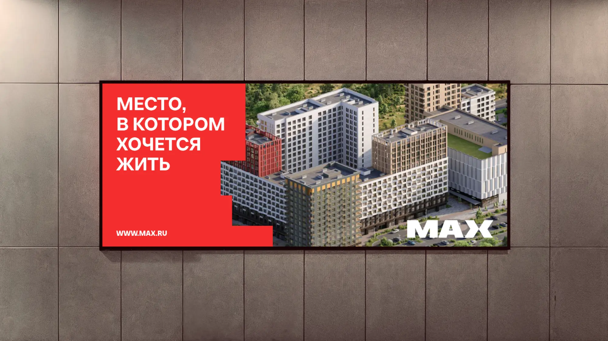
ЖК «МАХ»
Конкурсная концепция развития фирменного стиля жилого квартала комфорт-класса MAX. Проект предлагает адаптивную визуальную систему, объединяющую айдентику, графику, коммуникацию и бренд-персонажа для создания более живого и персонализированного образа квартала.
В рамках конкурса участникам предлагалось разработать дизайн-решения, которые могли бы стать частью нового жилого квартала MAX — от навигации и городской графики до мерча и маркетинговых материалов.
Существующая айдентика бренда нуждалась в развитии: важно было сохранить ее минималистичный характер, одновременно сделав систему более гибкой, выразительной и адаптированной к различным сценариям коммуникации. Дополнительной задачей стало создание эмоциональной связи между брендом и жителями квартала.
Проект развивает существующую айдентику, превращая ее в многослойную и адаптивную систему, способную меняться в зависимости от контекста коммуникации.
В основе визуального языка лежит архитектура квартала. Геометрические модули, вдохновленные формой зданий, квартир, фасадов и балконов, создают устойчивую графическую основу, которая постепенно наполняется деталями. Этот принцип отражает идею «от общего к частному»: чем ближе коммуникация к человеку, тем более индивидуальной и эмоциональной она становится.
Строгая геометрия сочетается с ручной графикой, надписями и иллюстрациями, символизирующими разнообразие жителей и их ценности. Такой подход позволяет сохранить целостность бренда, одновременно делая его более человечным, дружелюбным и близким аудитории.
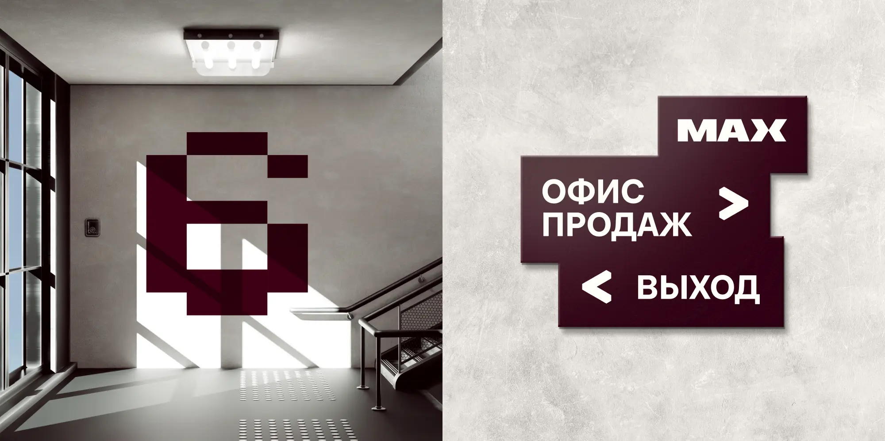
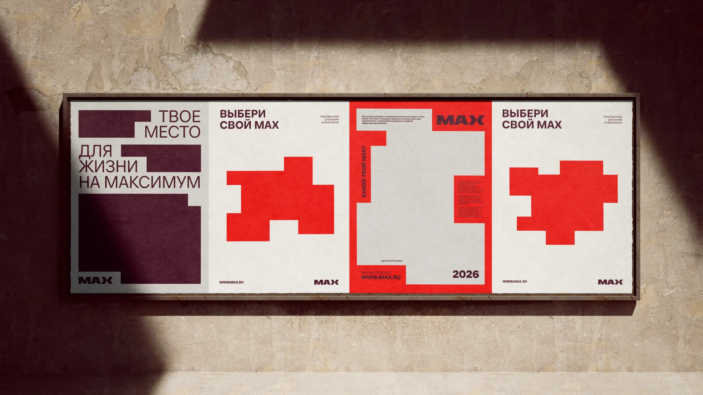
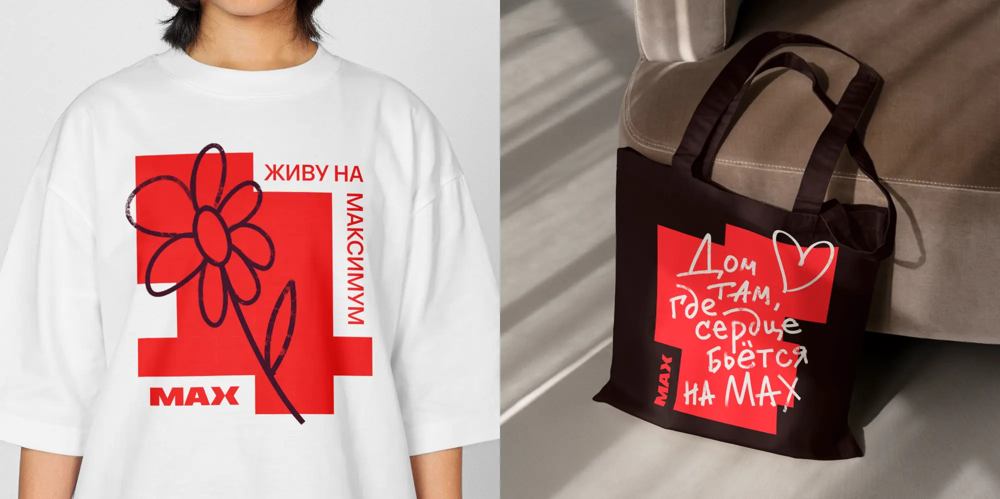
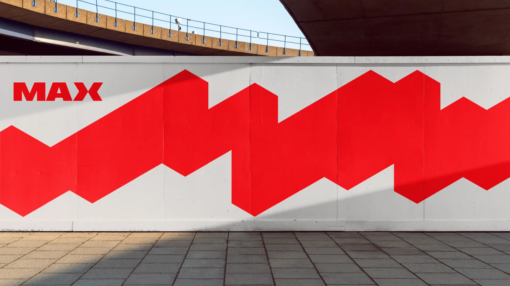
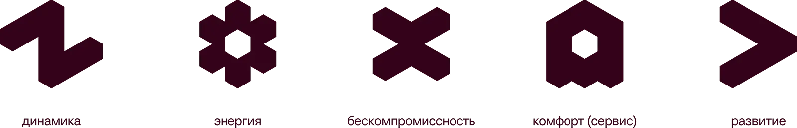
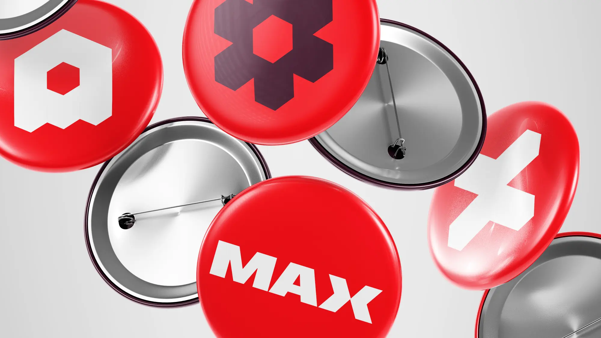
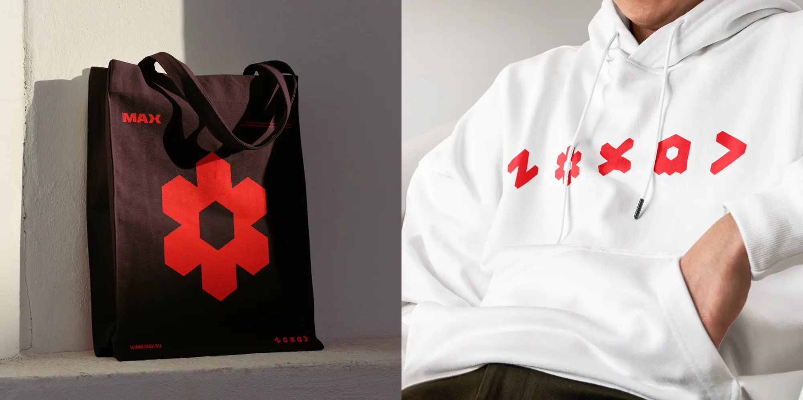
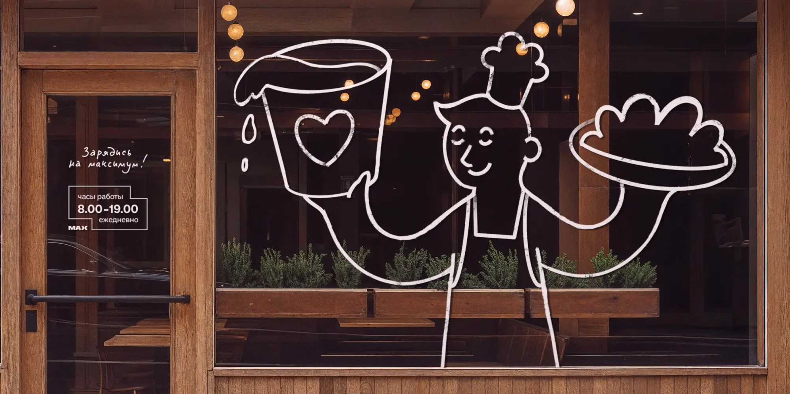
Маскот по имени Макс — первый и самый дружелюбный житель квартала. Он выступает проводником в экосистеме бренда, помогает новым жителям адаптироваться, рассказывает о жизни района и становится связующим звеном между людьми и пространством.
Персонаж может использоваться в различных коммуникационных сценариях: от навигации и городской среды до digital-каналов, мерча и сервисных коммуникаций.
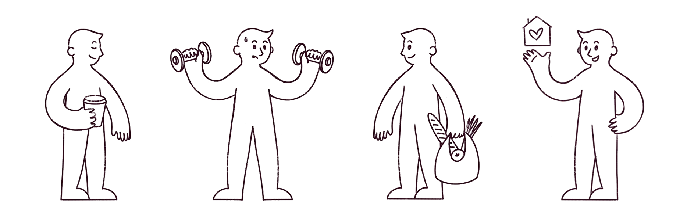
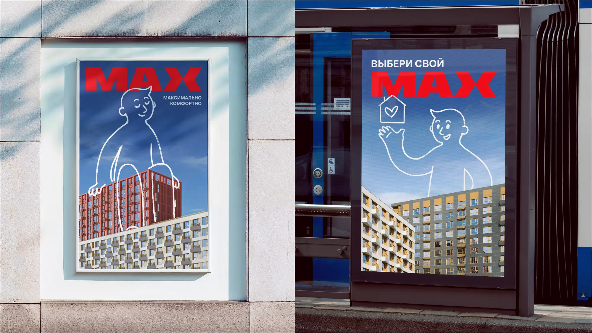
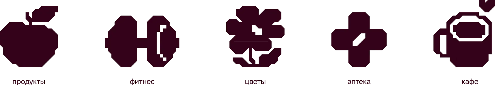
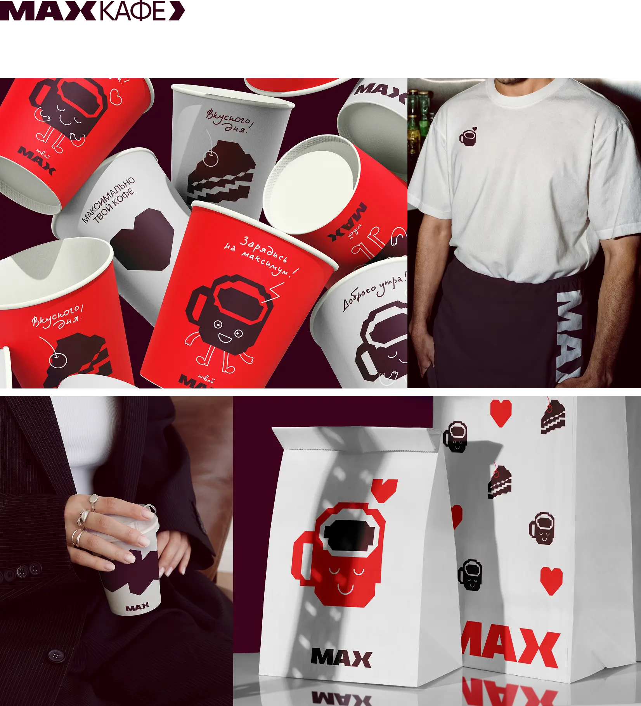
Проект был полностью разработан мной в рамках конкурсного задания.
В этом проекте я отвечала за:
- разработку концепции развития бренда
- создание адаптивной визуальной системы
- разработку графического языка
- разработку бренд-персонажа
- проектирование коммуникационных носителей и презентацию концепции
Проект получил призовые места сразу в четырех конкурсных номинациях:
- 1 место — «Графика»
- 2 место — «Айдентика»
- 2 место — «Комплексная концепция»
- 3 место — «Иллюстрация»